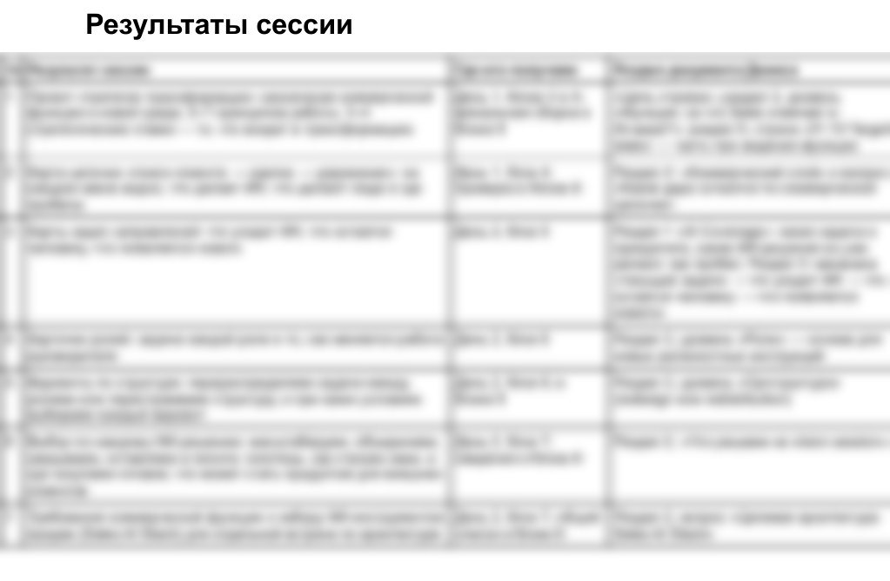
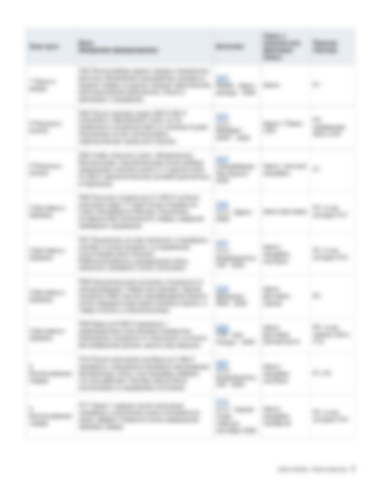
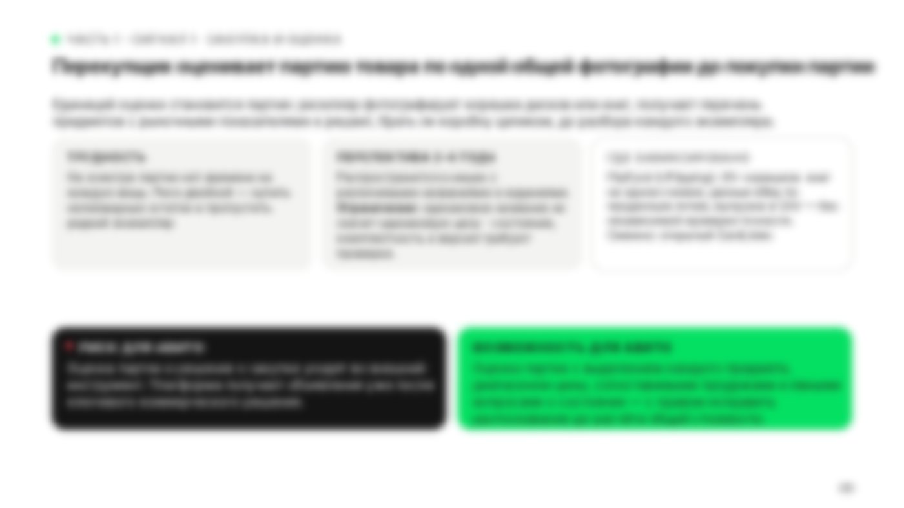
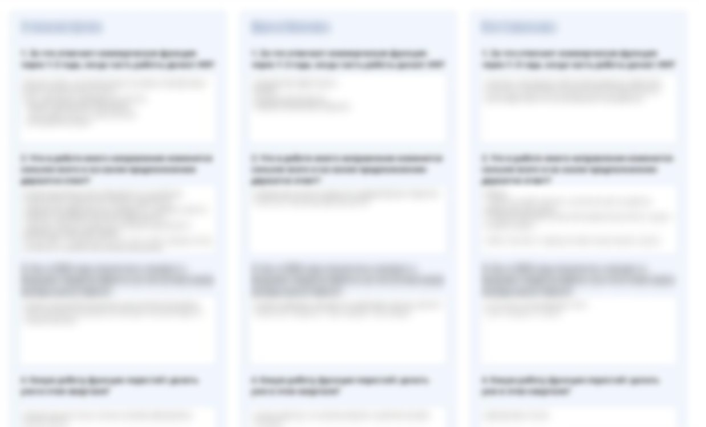
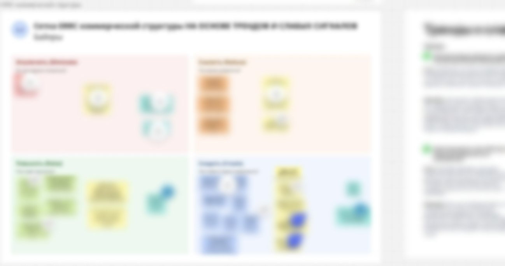
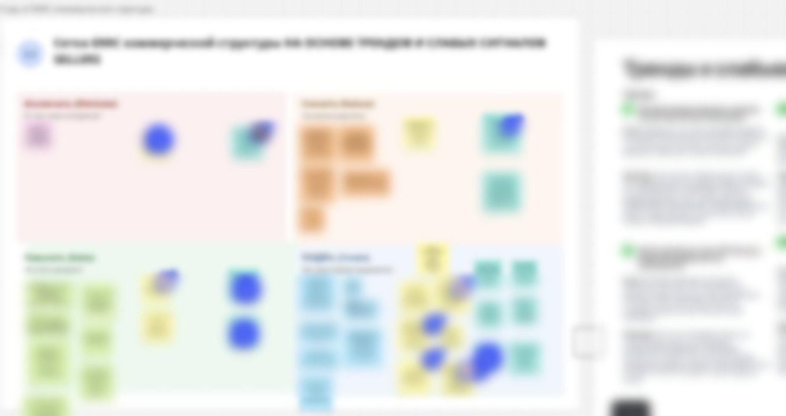
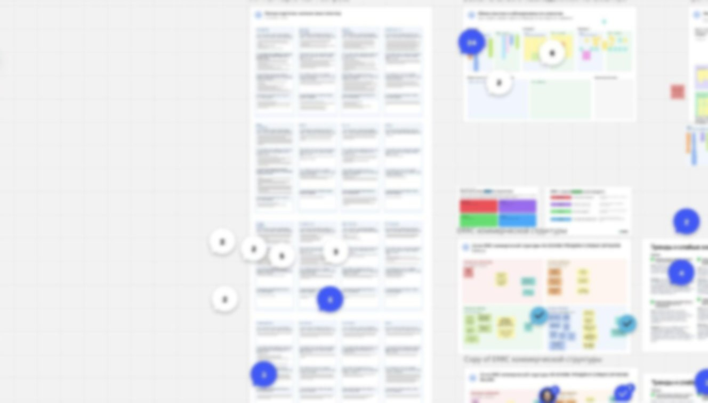
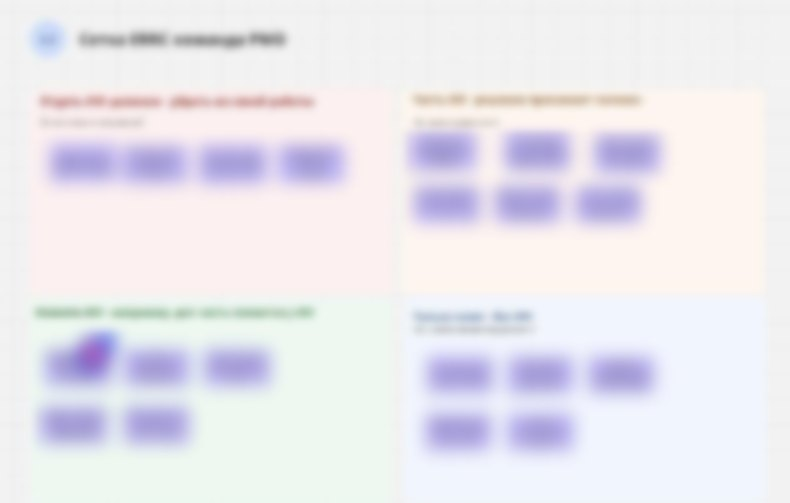
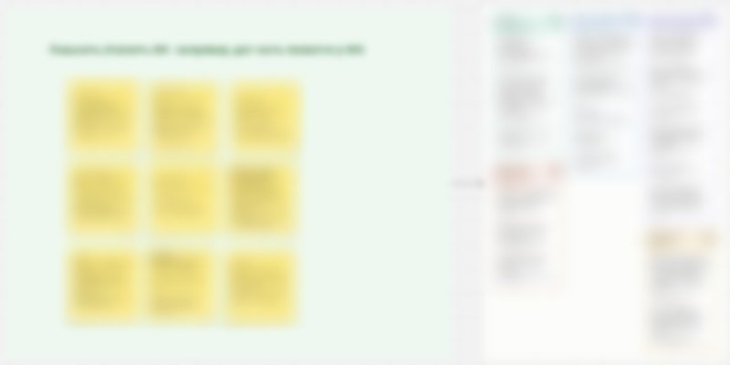

Контекст: компания опережает рынок по темпам внедрения ИИ-технологий: внутри функции уже был сформирован реестр задач в 11 доменах, каталог из более чем 100 внутренних ИИ-решений и амбициозная цель компании: довести регулярное использование ИИ сотрудниками до 80%.
Изображения скрыты из-за договора NDA
Ко мне обратился крупный маркетплейс с запросом на программу для руководителей коммерческой функции: продажи, маркетинг, работа с ключевыми клиентами, процессы и проекты, обучение - 16 руководителей направлений.
ИИ-трансформация в функции уже шла несколько месяцев: появились первые ИИ-решения, план по этапам внедрения, цель компании по использованию ИИ сотрудниками. И была знакомая многим картина: инструменты доступны всем, а работа меняется медленно. Каждый осваивал ИИ по-своему, решения дублировались, общего ответа на вопрос "какую работу функция отдает ИИ, а что остается за людьми" не было.
ИИ меняет и сам рынок e-commerce: то, как покупатели ищут и выбирают товар, и новые инструменты для продавцов на площадке. Обычно продуктовый бэклог собирают из отзывов и жалоб клиентов. Он закрывает сегодняшние боли, но не готовит площадку к покупателю, за которого товар выбирает ИИ. Функции нужно было ответить на оба изменения сразу.
Запрос начинался как классическая T&D-программа: научить руководителей самим видеть тренды и приносить инициативы. После серии встреч и изучения внутреннего плана трансформации он перерос в задачу уровня C-level: сформулировать видение коммерческой функции, где значительную часть работы делает ИИ, распределить работу каждого направления между ИИ и людьми и сформировать бэклог продуктовых инициатив с учетом изменения привычек клиентов из-за ИИ. Так из программы обучения получилась стратегическая сессия с 2 артефактами на выходе.
Еще до сессии я описала ожидаемые результаты и сверила активности с планом трансформации коммерческой функции

Главный риск такой сессии - 2 дня разговоров об ИИ вообще или погружение в операционные проблемы и сегодняшние запросы. Поэтому до старта я собрала то, на что команда могла опереться при каждом решении:
Все это упаковано в 3 деки раздаточных материалов на 93 слайда. Отзывы подсвечивали, где покупатель и продавец спотыкаются сегодня. Тренды, слабые сигналы и аномалии - какие потребности появятся завтра, когда часть выбора за покупателя начнет делать ИИ.


1-й день целиком был про то, как уже сегодня меняется сам рынок e-commerce и чего покупатели и продавцы будут ждать от площадки через несколько лет. Площадка двусторонняя, поэтому смотреть в будущее нужно было глазами и покупателей, и продавцов.
Руководители смотрели на одного и того же клиента с разных точек зрения: через процессы и обратную связь, через видение, через структуру рынка. Собрать из этих взглядов общую картину будущего клиента и было задачей дня.

За день у команды сложилась общая картина того, на чем площадка будет держаться, когда товар покупателю подбирает ИИ, и в каких случаях пользователь оставляет поиск и выбор за собой
Главное наблюдение дня - 4 запроса от пользователей, в которых сошлись выводы участников всех рабочих групп: "Эти четыре штуки выявились органически... Как будто они драйверы"
В результате наблюдений и трендов был сформирован бэклог с задачами, которые позволят сегодня подготовиться к завтрашним запросам клиентов: около 80 продуктовых инициатив для покупателей и продавцов.
Бэклог собрали сами руководители коммерческой функции, которая работает с продавцами и ключевыми клиентами площадки. Так исходный запрос заказчика - чтобы руководители сами видели тренды и приносили инициативы - получил первый конкретный результат уже в 1-й день.



Во 2-й день руководители решали, какую часть своей работы отдать ИИ, а что оставить людям. Результат дня - второй артефакт сессии, матрица задач всех направлений коммерческой функции по 4 режимам участия ИИ: отдать ИИ полностью, ИИ готовит, а решение принимает человек, усилить ИИ, только люди.
Из блока, где ИИ усиливает работу человека, команда свела 19 задач в 5 кластеров
1 из участниц сказала: "Я буквально расписала свою процессную рутину <...>, и мне это очень помогло понять, что я готова делегировать, а что нет". Другой руководитель отметил, что понял, где направления пересекаются и дублируют друг друга, а значит, их можно автоматизировать на уровне всей функции

На основе матрицы команда сформулировала цели по передаче задач ИИ, определила границы использования ИИ и зоны, которые остаются за руководителями, и выбрала задачи для быстрых побед и MVP. Главное - руководители увидели, где могут высвободить собственный ресурс, передав ряд задач ИИ полностью.

Руководители единодушно отметили, что их общее понимание, куда движется функция, подтвердилось и стало на ступень конкретнее: "Раньше мы смотрели в ту сторону, но не понимали, как к этому прийти. Сейчас у всех выровнялось понимание, куда идти и какие ключевые шаги от каждого"
Следующие шаги зафиксировали сразу: собрать и систематизировать матрицу "ИИ-человек", встречаться раз в 2 недели, чтобы собрать из нее план действий, прописать KPI по внедрению ИИ для тимлидов и провести такой же воркшоп в своих командах.
На следующий рабочий день участница написала:
"Стратсессия огнище. Сижу переписываю KPI и аналитикам уже высказала что аналитик без кпи на ИИ нам не нужен. Ща будем наращивать"
Именно это я считаю главной победой в этом кейсе: 2 артефакта, которые команда сделала сама на проверенных фактах о клиентах и рынке, и первые шаги по ним на следующий день после сессии.